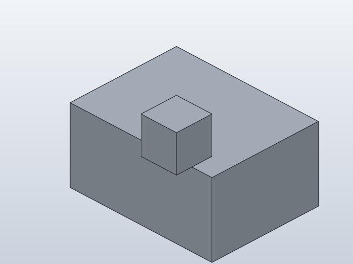
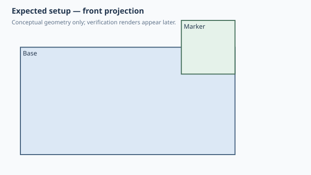
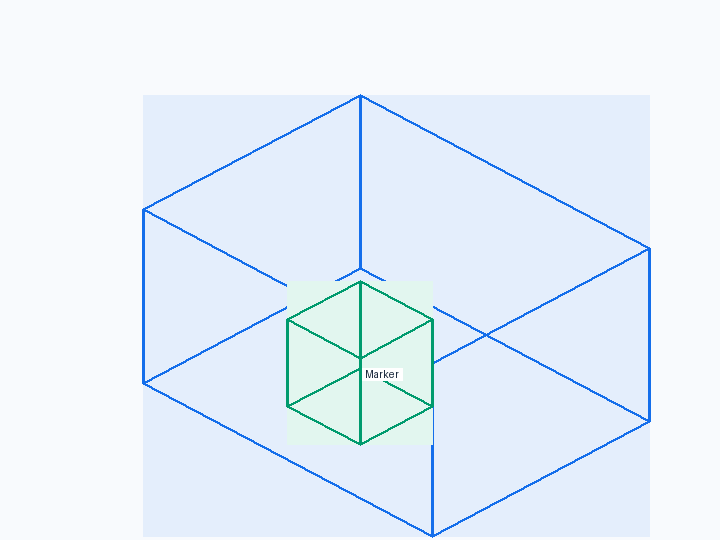
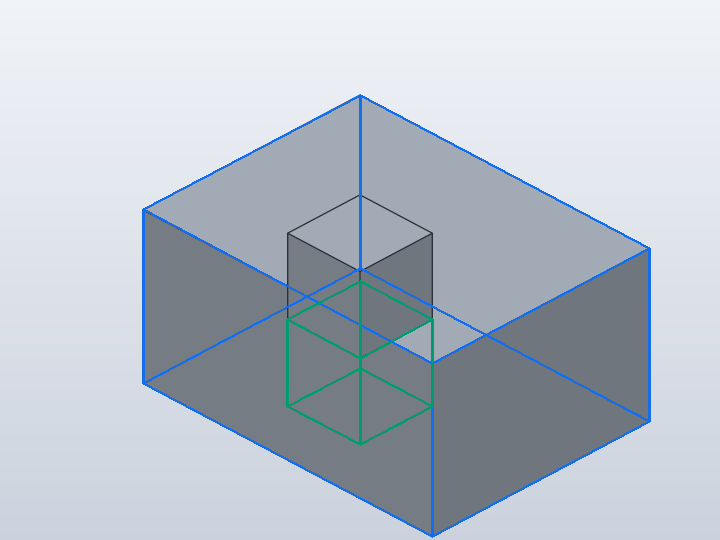
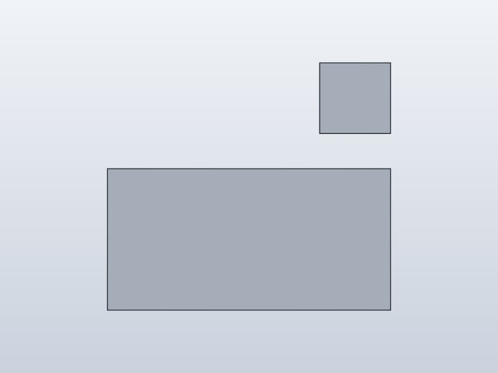
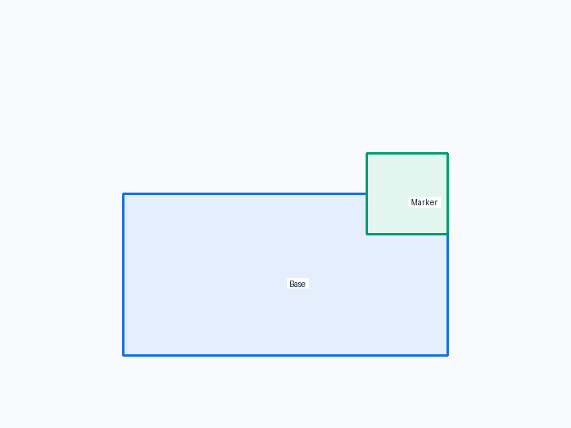
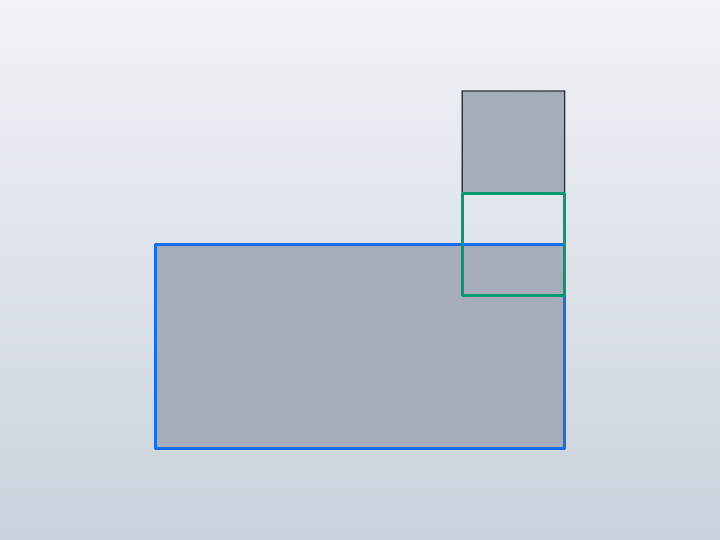
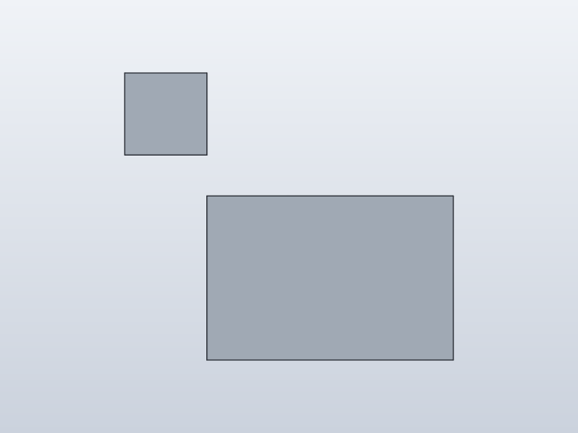
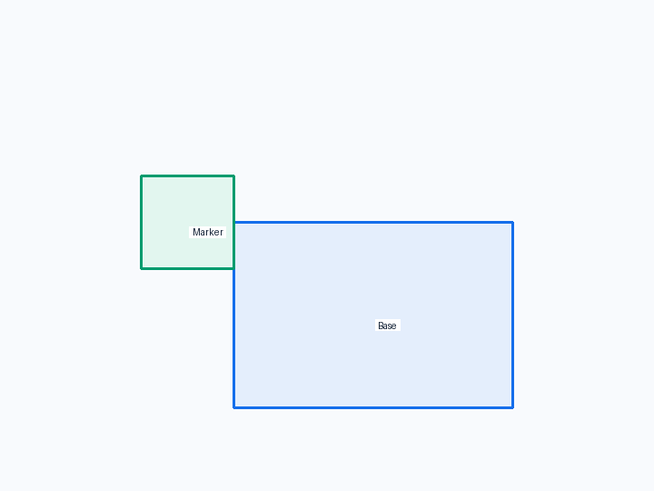
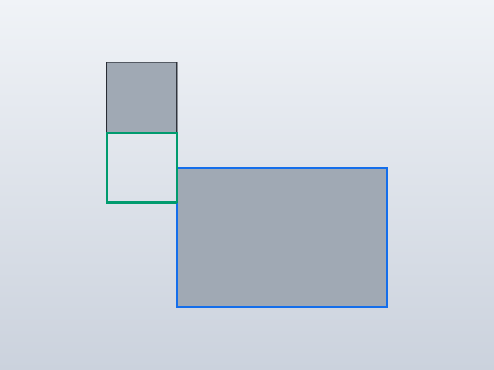

← Qualification / Editable local offset at an attachment
Forge qualification case
FAILQ1 · Q2 · Q3 · Q4 FAIL · Q5 FAIL · Q6 REVIEW
Editable local offset at an attachment

1. Test setup

Test goal
Verify the existing local (u,v) attachment-plane offset and make its coordinate semantics explicit.
Pass criteria
The marker moves within the selected corner anchor's local attachment plane.
Mutation criterion
Change shift from 5 to 10 mm in the saved design; the marker must follow the same local axis by another 5 mm.
2. Implementation under test
Fixture source
class Base:
def build(self):
return Box(40, 30, 20)
class Marker:
def build(self):
return Box(10, 10, 10)
class ParametricOffset:
shift = 5.0
def build(self):
base = Base()
marker = Marker().attach(
base,
parent=Anchor.FRONT_TOP_RIGHT,
child=Anchor.BACK_TOP_RIGHT,
offset=(0, -self.shift),
)
return base + marker
ParametricOffset()
Public Forge API used
attach(..., offset=(u, v))
Forge model represented by this fixture
Attachment stores two symbolic local planar values; these are not world X/Y/Z coordinates.
3. Generated SolidCraft relationship
A non-zero/symbolic local offset becomes joint.create(type='planar', values=[u,v,angle]).
Show generated relationship / command details
[
{
"command": "joint.create",
"params": {
"type": "planar",
"name": "Attach Marker:1 to Base:1",
"a": {
"occurrence": "Base:1",
"edge": [
20.0,
-15.0,
10.0
],
"on": [
0.0,
-15.0,
10.0
],
"corner": [
20.0,
-15.0,
20.0
]
},
"b": {
"occurrence": "Marker:1",
"edge": [
20.0,
-15.0,
15.0
],
"on": [
15.0,
-15.0,
15.0
],
"corner": [
20.0,
-15.0,
20.0
]
},
"values": [
0,
"-(shift)",
0.0
]
}
}
]4. Machine verification
shift 10 · 2 bodies · measurements-shift-10.json
Parameters
| Name | Value |
|---|---|
shift | 10.0 |
Bodies
| Body | BBox min | BBox max |
|---|---|---|
| Base | [-20, -15, 0] | [20, 15, 20] |
| Marker | [10, -25, 30] | [20, -15, 40] |
Baseline · 2 bodies · measurements.json
Parameters
| Name | Value |
|---|---|
shift | 5.0 |
Bodies
| Body | BBox min | BBox max |
|---|---|---|
| Base | [-20, -15, 0] | [20, 15, 20] |
| Marker | [10, -25, 25] | [20, -15, 35] |
Semantic validation
| Status | Level | Check | Expected | Actual |
|---|---|---|---|---|
| FAIL | Q4 | declared target geometry | [{"label": "Base", "min": [-20, -15, 0], "max": [20, 15, 20]}, {"label": "Marker", "min": [10, -25, 15], "max": [20, -15, 25]}] | [{"min": [-20.0, -15.0, 0.0], "max": [20.0, 15.0, 20.0]}, {"min": [10.0, -25.0, 25.0], "max": [20.0, -15.0, 35.0]}] |
| FAIL | Q4 | top-right anchor + 5 mm local offset | {"min": [10, -25, 15], "max": [20, -15, 25]} | {"max": [20.0, -15.0, 35.0], "min": [10.0, -25.0, 25.0]} |
| FAIL | Q5 | declared mutation target geometry | [{"label": "Base", "min": [-20, -15, 0], "max": [20, 15, 20]}, {"label": "Marker", "min": [10, -25, 20], "max": [20, -15, 30]}] | [{"min": [-20.0, -15.0, 0.0], "max": [20.0, 15.0, 20.0]}, {"min": [10.0, -25.0, 30.0], "max": [20.0, -15.0, 40.0]}] |
| FAIL | Q5 | 10 mm local offset mutation | {"min": [10, -25, 20], "max": [20, -15, 30]} | {"max": [20.0, -15.0, 40.0], "min": [10.0, -25.0, 30.0]} |
5. Visual verification
Iso
Current SolidCraft iso view

Expected geometry in the same iso view

Expected geometry over the actual iso view
Additional front/right views
Front

Current SolidCraft front view

Expected geometry in the same front view

Expected geometry over the actual front view
Right

Current SolidCraft right view

Expected geometry in the same right view

Expected geometry over the actual right view
6. Evidence and references
Raw evidence
Show generated files and measurements
- Fixture source
- Generated command JSON
- results.json
- measurements-shift-10.json
- measurements.json
- change-shift.json
- joint-inspect.json
- model-shift-10.sc
- model.sc
- model.step
- qualification-result.json
- validation.json
- visual-validation.json
- camera-front.json
- camera-iso.json
- camera-right.json
- Native snapshot: model.png
- Native snapshot: model-front.png
- Native snapshot: goal-front.png
- Native snapshot: overlay-front.png
- Native snapshot: model-right.png
- Native snapshot: goal-right.png
- Native snapshot: overlay-right.png
- Native snapshot: model-iso.png
- Native snapshot: goal-iso.png
- Native snapshot: overlay-iso.png


Reference models
These comparisons clarify concepts; Forge does not promise API compatibility with them.